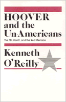

Explores the symbiotic relationship between the FBI and HUAC and reveals the Bureau's impressive if sometimes troubling record of shaping public opinion and influencing national politics
Explores the symbiotic relationship between the FBI and HUAC and reveals the Bureau's impressive if sometimes troubling record of shaping public opinion and influencing national politics


 Explores the symbiotic relationship between the FBI and HUAC and reveals the Bureau's impressive if sometimes troubling record of shaping public opinion and influencing national politics
Explores the symbiotic relationship between the FBI and HUAC and reveals the Bureau's impressive if sometimes troubling record of shaping public opinion and influencing national politics

|  |
Hoover and the Un-AmericansThe FBE, HUAC, and the Red MenaceKenneth O'Reillycloth EAN: 978-0-87722-301-6 (ISBN: 0-87722-301-7) |
"This splendid volume chronicles in a definitive way the shame and the sorrow which this useless and harmful committee brought to the Congress."
—Robert F. Drinan, S.J., Georgetown University Law Center and former Member of Congress
"American political leaders today tend to prefer security and order to liberty—and for that the FBI, along with the old House Committee on Un-American Activities, must be granted some of the credit." So concludes this study, based on documents released under the Freedom of Information Act.
Established in 1938 as a special investigating committee of the House of Representatives, HUAC worked tirelessly for nearly forty years to expose the "un-American" activities of dissident groups and individuals. For much of that time the Committee was aided by the Federal Bureau of Investigation. Never content to limit the FBI's mission to the pursuit of criminals or even to the task of bureaucratic empire building, FBI officials pursued more ambitious (what J. Edgar Hoover and his top aides called "educational") tasks—including a sweeping program launched during the early days of the Cold War and intended to "develop an informed public opinion" about the realities of the Red menace on the home front. The FBI hoped to accomplish this specific political goal by leaking "educational material" to HUAC and other "available channels."
Beginning with the reign of Martin Dies, Hoover and the Un-Americans explores the symbiotic relationship between the FBI and HUAC and reveals the Bureau's impressive if sometimes troubling record of shaping public opinion and influencing national politics. The Bureau not only underwrote much of HUAC's politics of exposure, but the similar efforts to Senator Joseph McCarthy and many of the era's most influential columnists. The Cold War would have developed with or without the FBI. But its domestic fallout would have been far different and far less capable of proscribing debate and limiting national options.
Kenneth O'Reilly teaches History at Marquette University.
© 2015 Temple University. All Rights Reserved. This page: http://www.temple.edu/tempress/titles/305_reg.html.